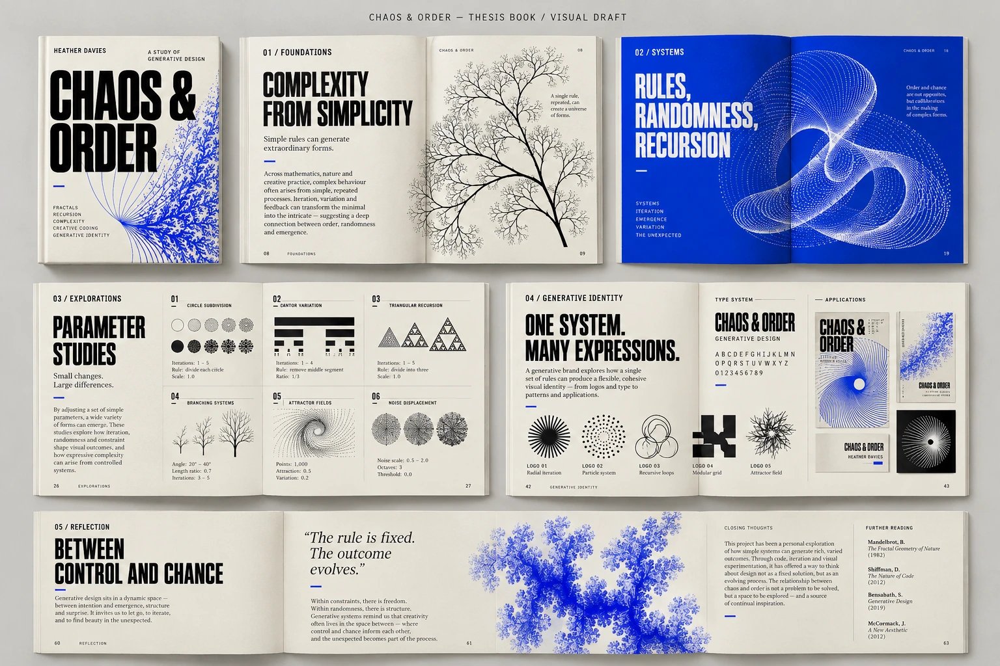
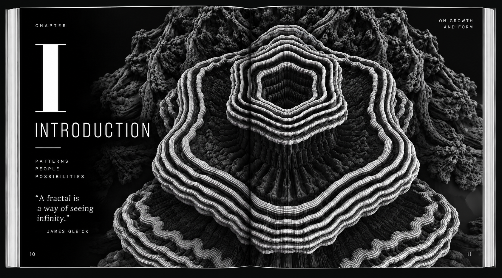
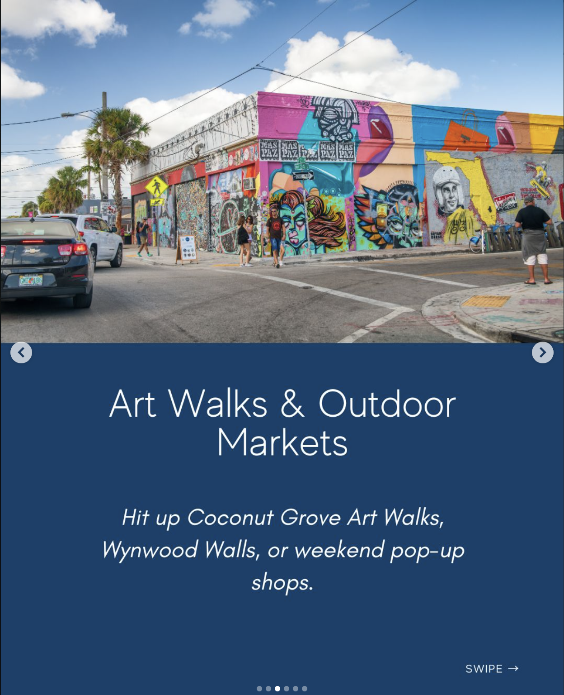

PRODUCT DESIGN / VISUAL SYSTEMS
Selected work
Digital experiences shaped by research, clear structure, and visual craft.
01 / Product design

Product design · AI interviewing
Making AI interview workflows easier to navigate
Designing recruiter onboarding and candidate interview preparation.

Product design · Healthcare
ALS Clinical Decision Tool
A guided resource app connecting people with ALS and clinicians to practical information.
02 / Visual systems & editorial

Editorial · AI-assisted visual concept
Chaos & Order
Exploring generative systems through a thesis book concept.

Editorial · Typography
On Growth and Form
Using typography and composition to shape a reading experience.

Commercial · Digital & editorial
Cervera Real Estate
Bringing a real estate brand across digital and print communications.